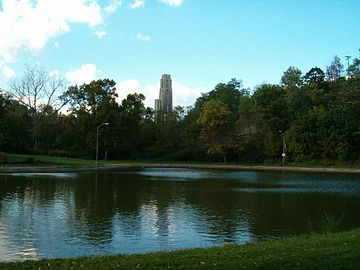

Schenely Park
The land for this over 400 acre park was donated by Mary Schenely, philanthropist and daughter of James O'Hara. It is the second largest park in Pittsburgh, only behind the massive Frick Park. It hosts an annual vintage motor sports car race and has been doing so since 1983. The park boasts large fields and scenic trails for visitors to utilize. Additionally, it is the home to Phipps Conservatory.
